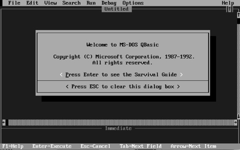

I'm a developer turned designer...

Development
I have been programming since I was 11 years old. Front end web development got me thinking about the end user. creating and problem solving has always been my passion.
Asking Why
Out of curiosity, I began to ask my clients the hardest question of all :“Why?” Then we began to strategize on content, marketing and the user experience.
UX Design
After studying user experience design at General Assembly, I'm more passionate than ever designing experiences by considering the user goals, business goals and technical feasibility.
It all began in middle school…
I got my first zenith computer and I learned how to program in QBASIC. I was fascinated by writing code.

Then in high school…
I learned Visual Basic, C++ and Java
I was supposed to do computers for the rest of my life, so I went to NYU for Computer Engineering.
I learned about the computer from the electron to the high level OS.
My passion was stronger than ever. Parallel systems, computer architecture, seeing how the system worked from the atom to the operating system.
So I started to do research in Computer Science with a focus in Security.
I learned about the problems with security in hardware and software and the “evil users” always undoing security features.

I did an internship at Intel working on software security for which I got a patent for. At one of the talks I saw Genevive Bell talk.
“the future of computing is experiences?”
I couldn't believe it at the time. I saw computers as a means to end as a way to get the desired output from the input.
BUT.. the seed was planted.
I discovered what was missing beyond the atoms and operating systems...
The User
What was the purpose of everything engineers do?

Answer: HUMANS (“the user”), making their lives better, solving a problem.
…On the side I had been doing web development, because I love creating things... Everyone who knows computers knows how to make a website right?
<html> Just do it… </html>
EVEN I FELL VICTIM TO THIS FALSE BELIEF.
Yes we can build websites technically, but will that website matter?
It only matters if it helps the users and business succeed.
So I asked my client.. why is this here? why are we doing that?
Soon enough I got an answer 'we don't know'. I set out to change that.
We had lots of discussions and finally started empathizing with the user and thinking about what they are thinking, feeling and doing as they use our products.